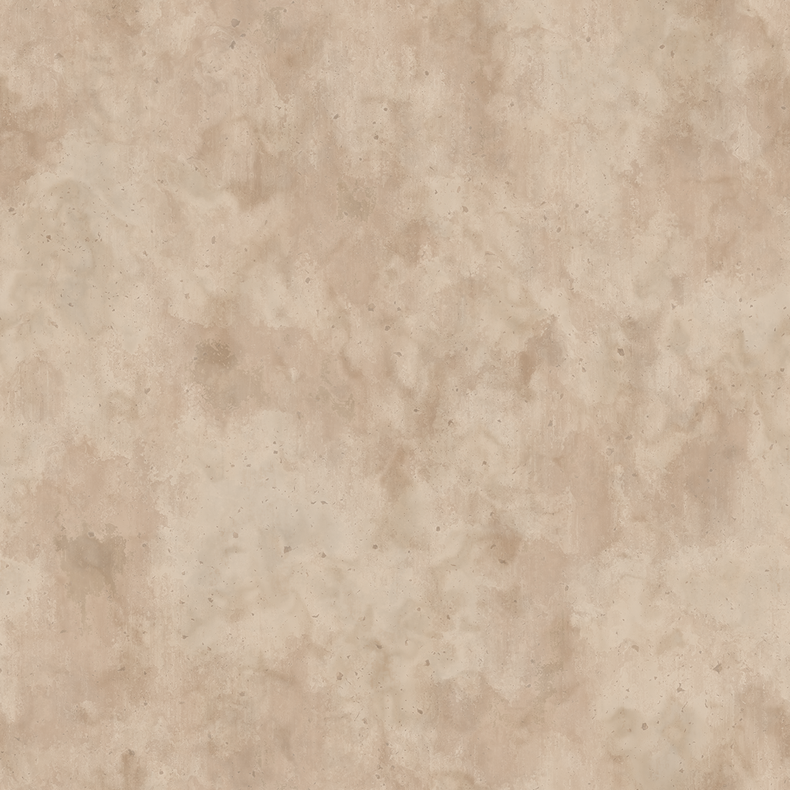

<a-scene *ngIf="loaded">

  <a-assets>
    
    
    
    
    
    
    <!-- 
    
    
     -->
    <a-asset-item id="ufo-o" src="../assets/imgs/ufo.obj"></a-asset-item>
    <a-asset-item id="ufo-m" src="../assets/imgs/ufo.mtl"></a-asset-item>
    <a-asset-item id="tyke-o" src="../assets/imgs/tyke.obj"></a-asset-item>
    <a-asset-item id="tyke-m" src="../assets/imgs/tyke.mtl"></a-asset-item>
    <a-asset-item id="mansion-o" src="../assets/imgs/3D Mansion_OBJ.obj"></a-asset-item>
    <a-asset-item id="mansion-m" src="../assets/imgs/3D Mansion_OBJ.mtl"></a-asset-item>
    <!-- <a-asset-item id="catapult-o" src="../assets/imgs/Catapult.obj"></a-asset-item>
    <a-asset-item id="catapult-m" src="../assets/imgs/Catapult.mtl"></a-asset-item> -->
  </a-assets>

  <a-sky src="#sky3" rotation="0 64 0">
  </a-sky>

  <a-entity obj-model="obj: #mansion-o; mtl: #mansion-m" position="-10 0 -130" scale="1 1 1">
  </a-entity>

  <a-camera>
    <a-entity
    cursor="fuse: true"
    position="0 0 -1"
    geometry="primitive: sphere; radius: 0.005"
    material="color: #000000; shader: flat; opactity: 0.5">
    </a-entity>
  </a-camera>

  <a-plane material="
  color: #FFFFFF;
  src: #tile1;
  repeat: 500 500;
  normal-map: #tile1-nrm;
  normal-texture-repeat: 500 500" rotation="-90 0 0" scale="1000 1000 1"></a-plane>

  <a-entity light="type: directional;
  intensity: 0.5"
  position="-0.5 1 1">
  </a-entity>

  <a-entity #ufoEntity></a-entity>
  <app-ufo [hostElement]="ufoEntity"></app-ufo>

  <!-- <a-box color="#FFFFFF" src="../assets/imgs/granite-cliff.png" 
    repeat="1 1" 
    normal-map="../assets/imgs/granite-cliff-nrm.png" 
    normal-texture-repeat="1 1"
    normal-scale="1 -1" roughness="0.6" width="4" height="4" depth="4" position="-2 1.5 -9"
    roughness="0.8"
    scale="1 1 1">
  </a-box>

  <a-box material="color: #FFFFFF; 
  src: #stone1; 
  repeat: 2 2;
  normal-map: #stone1-nrm;
  normal-texture-repeat: 2 2;
  normal-scale: 1 -1;
  roughess: 0.8" 
  width="4" height="4" depth="4" position="2 1.5 -9"
  scale="1 1 1">
  </a-box> -->

  <!-- normal-map: ../assets/imgs/granite-cliff-nrm.png;
  normal-texture-repeat:2 2;
  normal-scale:1 -1; -->
  <!-- 2:1 aspect ratio -->
  <!-- <a-box 
  color="#4CC3D9"
  width="4"
  height="2"
  depth="0.2"
  position="0 1 -7"
  rotation="90 0 0"
  scale="1 1 2"
  >
    <a-circle 
    color="#333333"
    side="double"
    position="2 0 0.11"
    rotation="90 0 0">
    </a-circle>
</a-box>

  <a-circle 
  color="#FFC107"
  side="double"
  position="-2 1 -7"
  scale="2 2 1">
  </a-circle>

  <a-cylinder 
  color="#616161"
  height="2"
  radius="2"
  segments-radial="7"
  open-ended="true"d
  side="double"
  rotation="0 -90 90"
  scale="2 1 2"
  >

  </a-cylinder> -->
</a-scene>